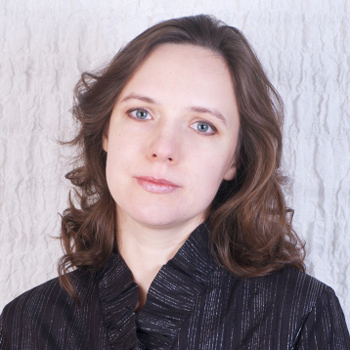
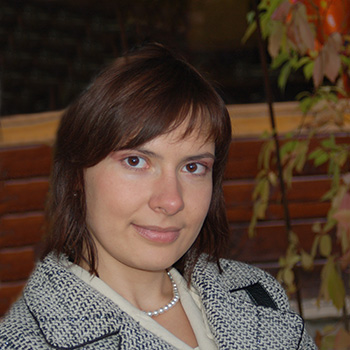
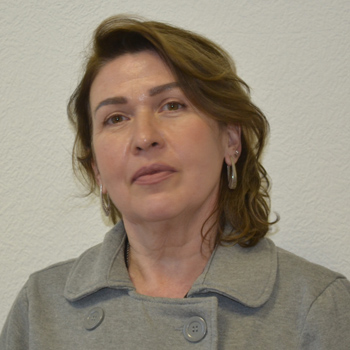
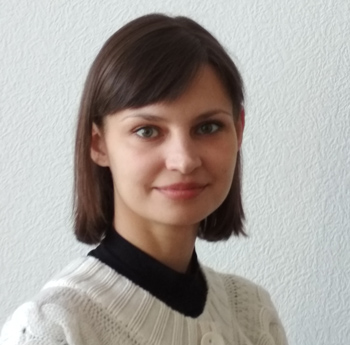

+7 499 579-92-69
+7 499 579-92-69
О компании
История создания Vertex group очень простая. Коллеги - консультанты с большим опытом работы решили создать такую компанию, в которой:
клиент получает именно ту услугу, которая ему необходима
качество услуг на самом высоком уровне
есть индивидуальный подход к каждому клиенту
работают только профессионалы
сотрудники компании соблюдают кодекс этики бизнеса
специалисты компании уделяют много времени своему развитию
Команда Vertex Group
В нашей команде работают только профессионалы, это очень надежные, проверенные временем и самыми сложными проектами специалисты. Опыт работы на рынке наших коллег более 13 лет. Наши специалисты имеют все необходимые дипломы и сертификаты, в том числе и международные. В этом году наши специалисты-оценщики получили квалификационные аттестаты по всем видам оценочной деятельности.
|  |
Колотвинова Анастасия Игоревна Генеральный директор, партнер Опыт работы в сфере оценки и консалтинга – 17 лет. MRICS (член Королевского общества сертифицированных экспертов в области недвижимости, Англия). Эксперт СРО. Преподаватель на курсах МВА и профпереподготовки (РАНХиГС) дисциплин: «Оценка недвижимости», «Этика бизнеса». Участие в реализации крупных проектов, руководство проектами по оценке, выполняемой в соответствии с Российскими Стандартами и Международными Стандартами (в том числе в рамках подготовки отчетности по МСФО). |
|
Колотвинова Анастасия Игоревна Генеральный директор, партнер Опыт работы в сфере оценки и консалтинга – 17 лет. MRICS (член Королевского общества сертифицированных экспертов в области недвижимости, Англия). Эксперт СРО. Преподаватель на курсах МВА и профпереподготовки (РАНХиГС) дисциплин: «Оценка недвижимости», «Этика бизнеса». Участие в реализации крупных проектов, руководство проектами по оценке, выполняемой в соответствии с Российскими Стандартами и Международными Стандартами (в том числе в рамках подготовки отчетности по МСФО). |
Образование:
• MBA «Управление недвижимостью». Академия народного хозяйства при правительстве РФ, факультет «Экономика недвижимости» • Институт профессиональной оценки при Финансовой Академии, г. Москва получение второго высшего образования (факультет «Финансы и кредит», финансовый менеджмент) • Институт профессиональной оценки при Финансовой Академии, г. Москва, профессиональная переподготовка, оценка бизнеса • Государственный Университет Геодезии и Картографии, г. Москва. Управление территориями, городской кадастр.
|  |
Филиппова Светлана Геннадьевна Руководитель проектов Опыт работы в сфере оценки – более 13 лет. Участие в реализации крупных проектов, выполняемой в соответствии с Российскими Стандартами и Международными Стандартами (в том числе в рамках подготовки отчетности по МСФО. |
|
Филиппова Светлана Геннадьевна Руководитель проектов Опыт работы в сфере оценки – более 13 лет. Участие в реализации крупных проектов, выполняемой в соответствии с Российскими Стандартами и Международными Стандартами (в том числе в рамках подготовки отчетности по МСФО. |
Образование:
• Институт профессиональной оценки при Финансовой Академии, г. Москва получение второго высшего образования (факультет «Финансы и кредит», финансовый менеджмент) • МИПК РЭА им. Г. В. Плеханова, Москва, курсы по проф. переподготовке «Профессиональная оценка и экспертиза объектов и прав собственности/Оценка стоимости предприятия (бизнеса)» • Государственный Университет Геодезии и Картографии, г. Москва. Управление территориями, городской кадастр
|  |
Кочижева Елена Зиновьевна Помощник руководителя, ведущий специалист по связям с общественностью Опыт работы в сфере финансовой деятельности – более 30 лет. Большой опыт в работе связанной с организацией производственных процессов; опыт работы в сфере бухгалтерского учета и налогового учета. |
|
Кочижева Елена Зиновьевна Помощник руководителя, ведущий специалист по связям с общественностью Опыт работы в сфере финансовой деятельности – более 30 лет. Большой опыт в работе связанной с организацией производственных процессов; опыт работы в сфере бухгалтерского учета и налогового учета. |
Образование:
• Государственная Сельскохозяйственная Академия. Специальность: Экономика и организация производственных процессов. • Курсы при Финансовой Академии «Организация бухгалтерского учета на предприятиях всех форм собственности». • Курсы переподготовки и повышения квалификации руководящих кадров органов Государственной налоговой инспекции.
|  |
Шкриба Юлия Сергеевна Ведущий специалист Опыт работы в сфере оценки – более 13 лет. Участие в реализации крупных проектов, связанных с оценкой объектов недвижимого (торговые центры, бизнес-центры, производственно-складские комплексы и проч.) и движимого имущества, выполняемой в соответствии с Российскими Стандартами и Международными Стандартами (в том числе в рамках подготовки отчетности по МСФО. |
|
Шкриба Юлия Сергеевна Ведущий специалист Опыт работы в сфере оценки – более 13 лет. Участие в реализации крупных проектов, связанных с оценкой объектов недвижимого (торговые центры, бизнес-центры, производственно-складские комплексы и проч.) и движимого имущества, выполняемой в соответствии с Российскими Стандартами и Международными Стандартами (в том числе в рамках подготовки отчетности по МСФО. |
Образование:
• Оценочная деятельность. ФГБОУ ДПО «Государственная академия промышленного менеджмента им. Н.П. Пастухова». • Оценка стоимости предприятия (бизнеса). ГОУ НПО «Орловский Государственный Технический Университет». • ГОУ НПО «Орловский Государственный Технический Университет». Факультет финансово-экономический. Антикризисное управление.
|
Алексеев Артур Иванович Руководитель проектов по оценке и технической экспертизе Опыт работы в сфере оценки и консалтинга – более 11 лет. Участие в реализации крупных проектов, руководство проектами по оценке, выполняемой в соответствии с Российскими Стандартами и Международными Стандартами. |
|
Алексеев Артур Иванович Руководитель проектов по оценке и технической экспертизе Опыт работы в сфере оценки и консалтинга – более 11 лет. Участие в реализации крупных проектов, руководство проектами по оценке, выполняемой в соответствии с Российскими Стандартами и Международными Стандартами. |
Образование:
• Оценка стоимости предприятия (бизнеса). Межотраслевой институт повышения квалификации и переподготовки руководящих кадров и специалистов Российской экономической академии им. Г.В. Плеханова. • Программа «Оценочная деятельность». Санкт-Петербургский государственный инженерно-экономический университет) • Программа «Оценочная деятельность». Санкт-Петербургский государственный университет экономики и финансов). • Московский государственный институт радиотехники, электроники и автоматики (технический университет), факультет «Электроника и оптико-электронная техника». Инженер оптик.
|
Кирилл Борисович Сиволапов Партнер компании Опыт работы в области недвижимости более 20 лет, как на стороне консалтинговых компании, так и на стороне девелопера. Разработка концепций и бизнес-планов девелоперских проектов, анализ наилучшего использования, опыт построения команды продаж. Опыт работы в различных регионах России, участие в создании объектов недвижимости различного назначения. Преподаватель ИОМ РАНХиГС с 2004 года, коммерческий девелопмент (бизнес-планирование, управление недвижимостью, оценка инвестиционных проектов, концепция торговых центров и т.д.). |
|
Кирилл Борисович Сиволапов Партнер компании Опыт работы в области недвижимости более 20 лет, как на стороне консалтинговых компании, так и на стороне девелопера. Разработка концепций и бизнес-планов девелоперских проектов, анализ наилучшего использования, опыт построения команды продаж. Опыт работы в различных регионах России, участие в создании объектов недвижимости различного назначения. Преподаватель ИОМ РАНХиГС с 2004 года, коммерческий девелопмент (бизнес-планирование, управление недвижимостью, оценка инвестиционных проектов, концепция торговых центров и т.д.). |
Образование:
• Московский Авиационный Институт - 1990. Инженер-системотехник, специализация, баллистика и динамика управления полетом. • Университет Висконсин Стаут - 1995 курсы по управлению строительством. • РЭА им. Плеханова, МИРБИС, - 1996 экономист, специализация финансы и кредит. • Центр обучения СТЕК - 1997 – Подготовка Аудиторов. • Президентская программа подготовки кадров – США, Аризона - 1998.
|
Опыт специалистов Vertex Group |
|
Опыт специалистов Vertex Group |
Наши специалисты имеют более чем 13-ти летний опыт работы с предприятиями следующих отраслей:
строительства и девелопмента
химической промышленности
машиностроительной промышленности
пищевой промышленности
металлургической промышленности
фармацевтической промышленности
авиационно-промышленного
топливно-энергетического комплекса
IT телекоммуникации
транспорта
логистики
розничной торговли
издательствам
государственным и общественным организациям
Пример крупных проектов, в которых наши специалисты принимали участие:
Оспаривание результатов кадастровой стоимости земельного участка принадлежащего ООО «Аргус» (входит в группу компаний STORM PROPERTIES). Комиссия по рассмотрению споров о результатах определения кадастровой стоимости согласилась с мнением наших специалистов и решила определить кадастровую стоимость земельного участка в размере рыночной стоимости, установленной в отчете об оценке
Оценка объектов недвижимости торговой сети для кредитования под залог. Успешная защита нашими специалистами отчета перед банком. Получив дополнительное финансирование, наш Клиент смог реализовать крупный инвестиционный проект
Оценка имущественного комплекса химического предприятия для кредитования под залог. Успешная защита нашими специалистами отчета перед банком. В результате реализации данного проекта, предприятие продолжило модернизацию завода
Оценка сельскохозяйственного холдинга в соответствии с Международными стандартами оценки для подготовки отчетности по МСФО. Реализация нашими специалистами данного проекта, помогло выйти компании на IPO
Оценка металлургического холдинга в соответствии с Международными стандартами оценки для подготовки отчетности по МСФО. Успешная защита проекта у BIG4
Оценка фармацевтического холдинга в соответствии с Международными стандартами оценки для подготовки отчетности по МСФО. Успешная защита проекта у BIG4
Наши специалисты имеют опыт успешной защиты отчетов по оценке, выполненной в целях кредитования в банках, в том числе:
ОАО «Газпромбанк»
ОАО «Сбербанк России»
ОАО «Банк ВТБ»
ОАО «АЛЬФА-БАНК»
ЗАО «Райффайзенбанк»
Ведущие сотрудники нашей компании имеют успешный и многолетний опыт преподавания на курсах МВА и курсах подготовки управляющих недвижимостью в ведущих вузах страны - РАНХиГС и Высшей школе экономики. Некоторые наши специалисты являются MRICS (членами Королевского общества сертифицированных экспертов в области недвижимости)
RICS (Royal Institution of Chartered Surveyors) — Королевское общество сертифицированных экспертов в области недвижимости, созданное в Великобритании в 1868 году. RICS является международной организацией, представляющей интересы специалистов во всех областях недвижимости, землепользования и строительства. RICS также является официальным органом регулирования профессиональной деятельности специалистов данного сектора экономики.
© Vertex group, 2014